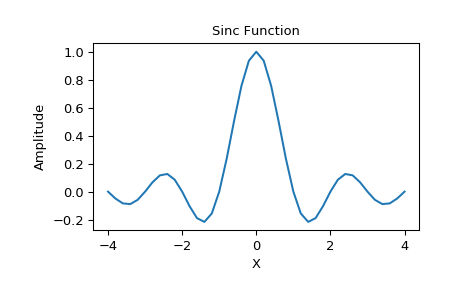
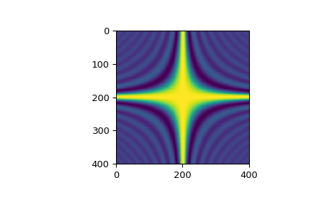

scipy.special.sinc¶
-
scipy.special.sinc(x)¶ Return the sinc function.
The sinc function is \(\sin(\pi x)/(\pi x)\).
- Parameters
- xndarray
Array (possibly multi-dimensional) of values for which to to calculate
sinc(x).
- Returns
- outndarray
sinc(x), which has the same shape as the input.
Notes
sinc(0)is the limit value 1.The name sinc is short for “sine cardinal” or “sinus cardinalis”.
The sinc function is used in various signal processing applications, including in anti-aliasing, in the construction of a Lanczos resampling filter, and in interpolation.
For bandlimited interpolation of discrete-time signals, the ideal interpolation kernel is proportional to the sinc function.
References
- 1
Weisstein, Eric W. “Sinc Function.” From MathWorld–A Wolfram Web Resource. http://mathworld.wolfram.com/SincFunction.html
- 2
Wikipedia, “Sinc function”, https://en.wikipedia.org/wiki/Sinc_function
Examples
>>> import matplotlib.pyplot as plt >>> x = np.linspace(-4, 4, 41) >>> np.sinc(x) array([-3.89804309e-17, -4.92362781e-02, -8.40918587e-02, # may vary -8.90384387e-02, -5.84680802e-02, 3.89804309e-17, 6.68206631e-02, 1.16434881e-01, 1.26137788e-01, 8.50444803e-02, -3.89804309e-17, -1.03943254e-01, -1.89206682e-01, -2.16236208e-01, -1.55914881e-01, 3.89804309e-17, 2.33872321e-01, 5.04551152e-01, 7.56826729e-01, 9.35489284e-01, 1.00000000e+00, 9.35489284e-01, 7.56826729e-01, 5.04551152e-01, 2.33872321e-01, 3.89804309e-17, -1.55914881e-01, -2.16236208e-01, -1.89206682e-01, -1.03943254e-01, -3.89804309e-17, 8.50444803e-02, 1.26137788e-01, 1.16434881e-01, 6.68206631e-02, 3.89804309e-17, -5.84680802e-02, -8.90384387e-02, -8.40918587e-02, -4.92362781e-02, -3.89804309e-17])
>>> plt.plot(x, np.sinc(x)) [<matplotlib.lines.Line2D object at 0x...>] >>> plt.title("Sinc Function") Text(0.5, 1.0, 'Sinc Function') >>> plt.ylabel("Amplitude") Text(0, 0.5, 'Amplitude') >>> plt.xlabel("X") Text(0.5, 0, 'X') >>> plt.show()
It works in 2-D as well:
>>> x = np.linspace(-4, 4, 401) >>> xx = np.outer(x, x) >>> plt.imshow(np.sinc(xx)) <matplotlib.image.AxesImage object at 0x...>
